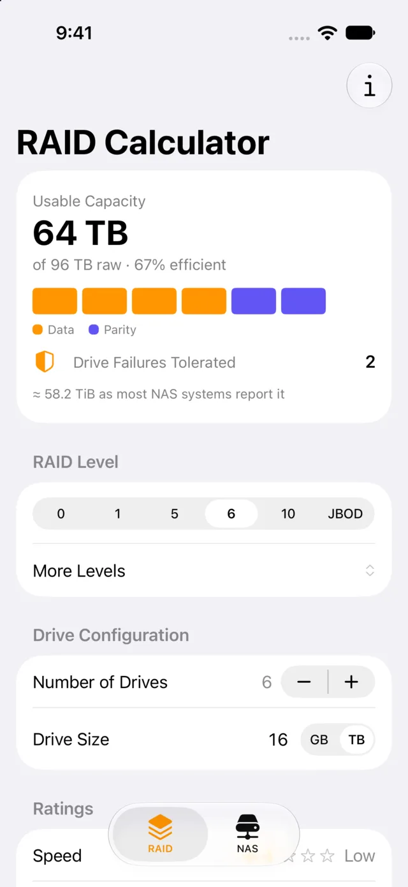
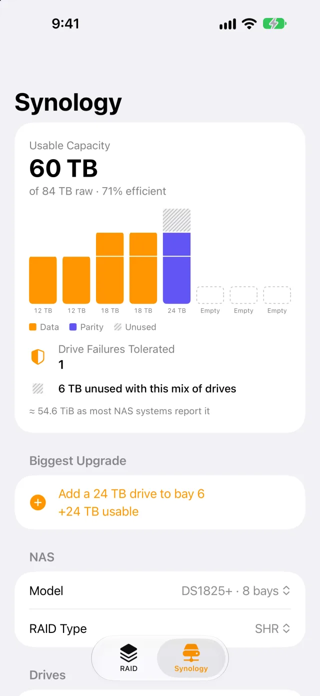
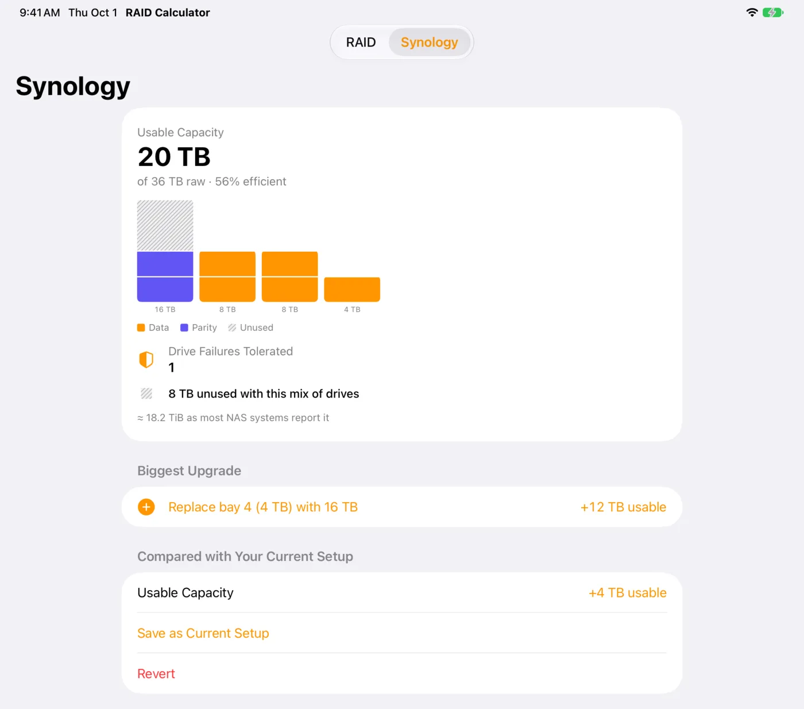
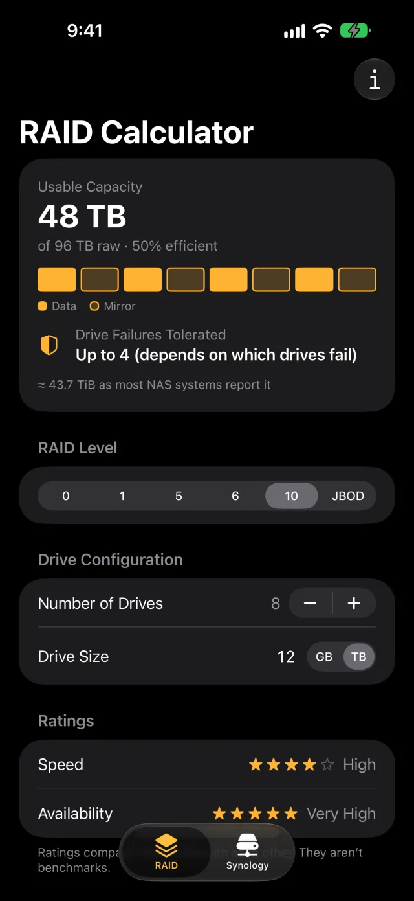
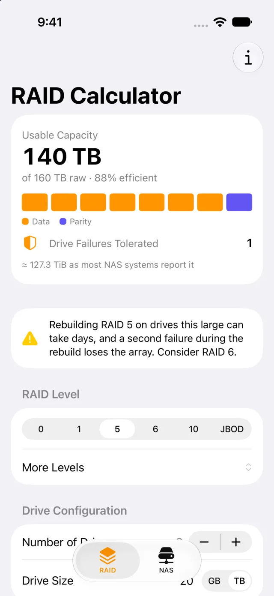
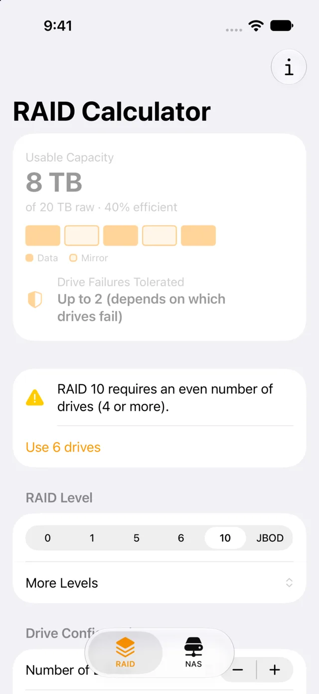
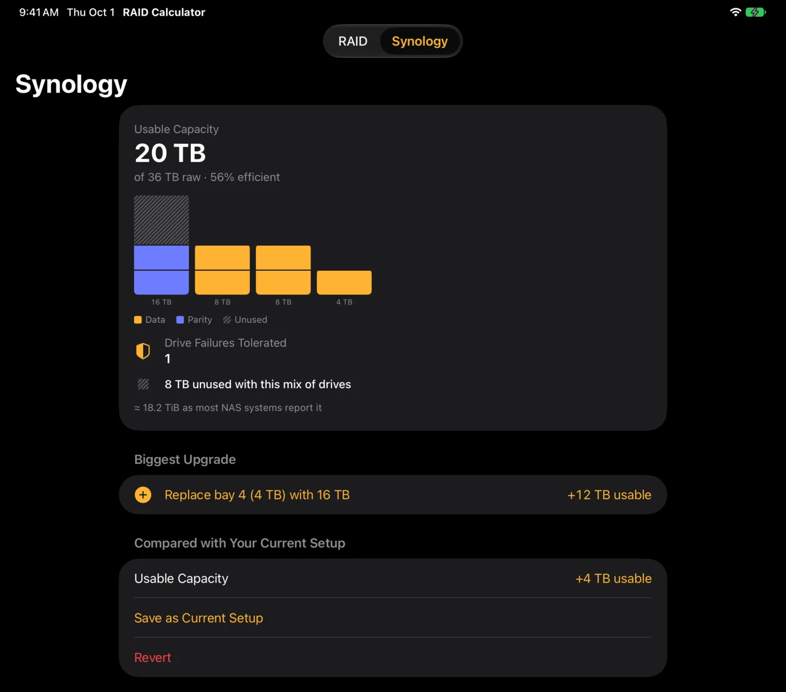
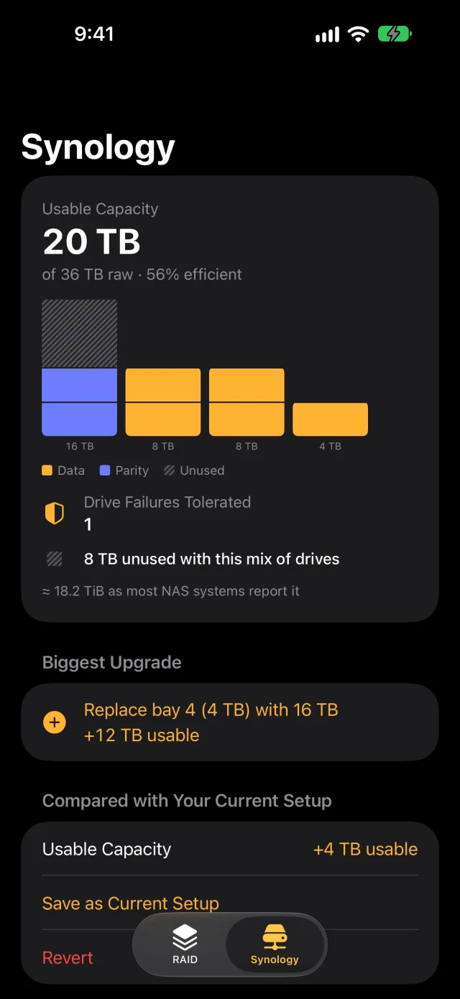
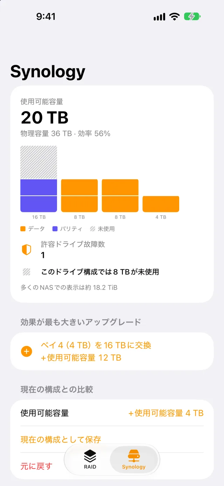

How much space will you actually get?
RAID Calculator for iPhone and iPad shows your usable capacity, how many drives can fail, and, if you own a Synology, which drive to buy next.


Most calculators assume identical drives. Your NAS has a 4 TB from 2019 next to last month’s 16 TB.
Same drives, two layouts
2 × 4 TB + 2 × 8 TB
Upgrading one drive in an SHR array often gains less than you’d expect until a second large drive joins it. The app shows that number before you spend.

Model presets cover current DiskStations from 2 to 12 bays: DS225+, DS725+, DS223j, DS425+, DS925+, DS423, DS1525+, DS625slim, DS1825+ and DS2422+. There’s a custom bay count too, and SHR and SHR-2 sit alongside Synology’s RAID 1, 5 and 6.
RAID 0, 1, 5, 6, 10 and JBOD. The answer first, the reasoning right under it.
Set the number of drives (1–24) and a size in GB or TB. Usable capacity is the biggest thing on screen, with raw capacity and efficiency beneath it. Your last setup is remembered.

See why RAID 10 costs half your drives
One bar per drive, colored by what it does: data, parity or mirror, so the mirrored pairs are plain to see. Fault tolerance is honest about the conditional cases: “Up to 4 (depends on which drives fail).”

A warning while it still matters
RAID 5 on drives of 8 TB or more warns that a rebuild can take days, and that a second failure during it loses the array. It suggests RAID 6.

Invalid setups fix themselves
“RAID 10 requires an even number of drives (4 or more).” Tap “Use 6 drives” and the numbers come back. Each level also has an info sheet: overview, pros, cons, typical uses and ratings.
Speed and availability ratings compare RAID levels with each other; they aren’t benchmarks. Capacity uses the standard simplified formulas, and the app also shows the figure most NAS systems report (“≈ 58.2 TiB”).
Native SwiftUI on iPhone and iPad. Light mode, dark mode, five languages.
Liquid Glass, Dynamic Type at every size including the largest accessibility sizes, and VoiceOver that reads diagrams as full sentences: “Bay 1, 16 TB: 8 TB parity, 8 TB unused.” English, Spanish, French, Italian and Japanese.

On iPad
The same calculations in a wider layout: diagram, biggest upgrade and every bay on one screen.


No account, no analytics, no network calls.
Every calculation happens on your device, so the app works in a server room or anywhere else with no signal. The App Store privacy label reads Data Not Collected, and there are no third-party services.
- No account or sign-in
- No analytics, tracking or advertising
- No network calls; works fully offline
- No third-party services
Questions
What is SHR?
Synology Hybrid RAID builds RAID in layers of matching capacity, so mixed drive sizes waste less space than classic RAID. The app supports SHR and SHR-2, and lets you compare them with classic RAID on the same drives.
Why does my NAS show less than I expected?
Drives are sold in TB and most NAS systems report TiB. RAID Calculator shows both, so the number on the page matches the number you see after setup.
What doesn’t it cover?
RAID 50 and 60, ZFS RAID-Z, Unraid, Synology expansion units and SSD cache aren’t supported. It doesn’t estimate cost, power or IOPS, and it never touches your actual disks.
Are the speed ratings benchmarks?
No. Speed and availability are 1–5 star comparisons between RAID levels, labeled as such in the app. Capacity figures use standard simplified formulas and don’t account for a specific filesystem’s overhead.